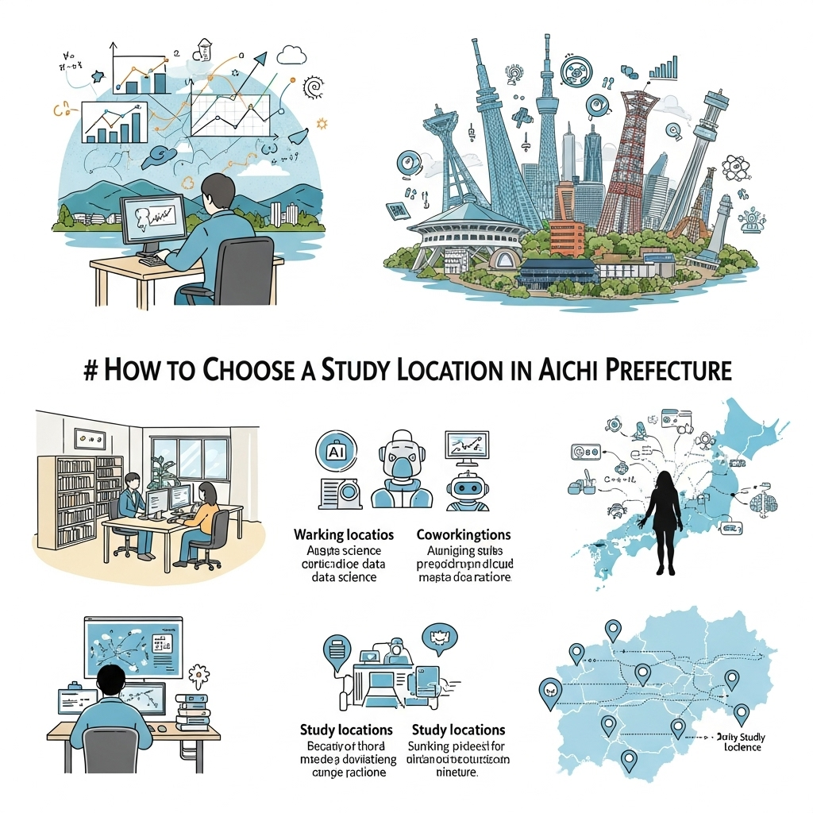

データサイエンスを愛知県で学ぶ！社会人向け学習方法とキャリア戦略
導入
私たちの周りには、日々、膨大な量の「データ」が生まれています。スマートフォンの利用履歴、インターネットでの購買記録、工場のセンサーから集まる稼働データ、街中の人々の流れ。これらは、かつては見過ごされていたか、あるいは処理しきれなかった情報の海でした。しかし今、このデータの海から価値ある「知見」という真珠を見つけ出し、ビジネスや社会の課題解決に活かす技術、それが「データサイエンス」です。
データサイエンスは、もはや一部のIT企業だけのものではありません。製造業、小売業、金融、医療、行政に至るまで、あらゆる分野でその重要性が叫ばれ、データを正しく読み解き、未来を予測し、最適な意思決定を導き出せる人材への需要が、かつてないほど高まっています。
そして、この大きな変化の波は、日本のものづくりの中枢である「愛知県」においても、例外ではありません。むしろ、トヨタ自動車をはじめとする世界的な製造業が集積し、日本の産業を力強く牽引してきたこの地だからこそ、データサイエンスがもたらす変革のインパクトは計り知れないものがあります。工場の生産性を劇的に向上させる「スマートファクトリー」の実現、顧客一人ひとりに合わせたサービスの提供、そして未来の市場を読み解く新たなビジネスの創出。愛知県の産業が次のステージへと進化を遂げる上で、データサイエンスは不可欠な羅針盤となるのです。
この記事を読んでくださっているあなたも、もしかしたら「今の仕事に、データ活用の知識を活かせないだろうか」「専門的なスキルを身につけて、自分の市場価値を高めたい」「将来性のある分野で、地元愛知に貢献しながらキャリアを築きたい」といった想いを抱いているのではないでしょうか。
この記事は、そんな愛知県で働く社会人の皆さまに向けて、データサイエンスという新たなスキルを身につけ、ご自身のキャリアをより豊かにしていくための具体的な道筋を、優しく、そして詳しく解説するものです。
データサイエンスを学ぶ意義やメリットはもちろん、学習を進める上での現実的な課題やその乗り越え方、愛知県内での具体的な学習方法、そして、その先にあるキャリアの可能性まで。一歩ずつ、着実に歩みを進めるための知識とヒントを、余すことなくお伝えしていきます。
未来への扉を開く鍵は、もうあなたの手の中にあります。さあ、一緒にデータサイエンスの世界を探求し、愛知県で輝く未来のキャリアを描いていきましょう。
データサイエンスを愛知県で学ぶ意義と可能性
なぜ今、これほどまでにデータサイエンスが注目されているのでしょうか。そして、日本の産業の中心地である愛知県で、この分野を学ぶことには、どのような特別な意味があるのでしょうか。この章では、データサイエンスが社会に与えるインパクトと、愛知県ならではの需要、そしてデータサイエンティストという仕事の具体的な姿について、じっくりと掘り下げていきます。
データサイエンスが変える社会と需要
「DX（デジタルトランスフォーメーション）」という言葉を、ニュースやビジネスシーンで耳にしない日はないでしょう。DXとは、単にデジタルツールを導入することではありません。デジタル技術とデータを活用して、ビジネスモデルや業務プロセス、さらには企業文化そのものを根底から変革し、新たな価値を創造していく取り組みのことです。そして、このDXを成功に導くためのエンジンとなるのが、データサイエンスに他なりません。
考えてみてください。私たちが日常的に利用するサービスにも、データサイエンスは深く浸透しています。
- オンラインショッピングサイトでは、過去の購買履歴や閲覧履歴から「あなたへのおすすめ」商品が提案されます。これは、膨大な顧客データを分析し、個々のユーザーの好みを予測するアルゴリズムが働いているからです。
- 動画配信サービスで、次に見たい作品が絶妙なタイミングで表示されるのも、視聴データに基づいたレコメンデーションエンジンのおかげです。
- 金融業界では、過去の取引データから不正な取引を検知するシステムが稼働し、私たちの資産を守っています。また、個人の信用情報を多角的に分析し、より適切な融資判断を行う「クレジットスコアリング」もデータサイエンスの応用例です。
- 医療分野では、CTやMRIの画像データをAIが解析し、医師の診断を補助する技術が実用化されつつあります。また、膨大な臨床データや論文を分析することで、新薬開発のスピードアップにも貢献しています。
このように、データサイエンスは、経験や勘といった属人的な要素に頼りがちだった意思決定を、客観的なデータという根拠に基づいた「データドリブン」なものへと変えていきます。これにより、企業はより正確に市場のニーズを捉え、業務を効率化し、新たなビジネスチャンスを発見することができるのです。
この社会全体の大きな変化に伴い、データを扱う専門家、すなわち「データサイエンティスト」への需要は爆発的に増加しています。かつてハーバード・ビジネス・レビュー誌が「21世紀で最もセクシーな職業」と評したように、データサイエンティストは、現代のビジネスにおいて最も重要で、かつ魅力的な役割の一つと見なされています。なぜなら、彼らは単なる分析者ではなく、データという新しい資源から未来を読み解き、ビジネスを成功へと導く「羅針盤」の役割を担うからです。AI、機械学習、ビッグデータといった最先端技術を駆使し、複雑な課題を解決するその姿は、まさに現代の魔法使いと言えるかもしれません。この魔法を操る人材が、今、あらゆる業界で渇望されているのです。
愛知県で求められるデータサイエンス人材
それでは、日本のものづくりの中枢である愛知県において、データサイエンス人材は具体的にどのような場面で求められているのでしょうか。愛知県の産業構造を紐解くと、その答えはより明確になります。
1. 製造業におけるDXの加速
愛知県の経済を支える最大の柱は、言わずと知れた製造業です。トヨタ自動車を筆頭とする自動車産業、そして航空宇宙産業、工作機械、ファインセラミックスなど、世界に誇る企業が数多く集積しています。これらの伝統的で強力な産業が、今まさに「100年に一度の大変革期」を迎え、DX、そしてデータサイエンスの活用を急務としています。
- スマートファクトリーの実現：工場のあらゆる機器にセンサーを取り付け、稼働状況、温度、振動といったデータをリアルタイムで収集・分析します。これにより、生産ラインのボトルネックを発見して効率を最大化したり、異常の兆候を事前に察知して故障を防ぐ「予知保全」を実現したりすることが可能になります。熟練工の「匠の技」をデータ化し、技術伝承に役立てる取り組みも進んでいます。
- 品質管理の高度化：製品の画像データをAIで解析し、人間の目では見逃してしまうような微細な傷や欠陥を瞬時に発見するシステムが導入されています。また、製造工程の様々なデータを分析することで、不良品が発生する根本的な原因を特定し、品質の安定化につなげます。
- サプライチェーンの最適化：部品の調達から生産、在庫管理、物流、販売まで、一連の流れ（サプライチェーン）に関わる膨大なデータを分析します。これにより、需要をより正確に予測し、欠品や過剰在庫を防ぎながら、全体のコストを最小化する最適な計画を立案することができます。
これらの取り組みを推進するためには、製造現場の知識（ドメイン知識）とデータサイエンスのスキルを併せ持った人材が不可欠です。愛知県の製造業は、単にプログラミングができるだけの人材ではなく、「ものづくりの心を理解し、データで現場の課題を解決できる人材」を強く求めているのです。
2. 多様な産業への広がり
愛知県の魅力は製造業だけではありません。名古屋市を中心に、商業、金融、サービス業も大きく発展しています。
- 小売・流通業：スーパーマーケットや百貨店では、顧客の購買データ（POSデータ）や会員情報、さらには天候データなどを組み合わせて分析し、効果的な販促キャンペーンや最適な商品陳列を計画します。ECサイトでは、顧客一人ひとりに合わせたパーソナライズされたマーケティングが重要になります。
- 金融業：地元の地方銀行や信用金庫では、地域経済の動向や顧客の取引データを分析し、中小企業への融資判断や経営支援に役立てています。
- インフラ・エネルギー産業：電力やガスの使用量データを分析し、将来の需要を予測することで、エネルギーの安定供給と効率的な設備投資を実現します。
このように、愛知県内のあらゆる産業で、データ活用のニーズが高まっています。これは、データサイエンティストにとって、活躍できるフィールドが非常に多岐にわたることを意味しています。
データサイエンティストの具体的な仕事内容
「データサイエンティスト」と聞くと、一日中パソコンに向かって、複雑な数式やプログラムと格闘している姿をイメージするかもしれません。もちろん、そうした技術的な側面も重要ですが、実際の仕事はもっとダイナミックで、コミュニケーション能力も求められるものです。データサイエンティストの仕事は、一般的に以下のようなプロセスで進められます。
ステップ1：課題設定（ビジネス課題の理解）
すべての分析は、ここから始まります。最も重要なのは、「何を解決するために、データを分析するのか？」という目的を明確にすることです。「売上が落ちている原因を特定したい」「新商品のターゲット顧客を見つけたい」「生産ラインの停止時間を減らしたい」といった、ビジネス上の具体的な課題を、関係部署の担当者と対話を重ねながら深く理解します。ここで的確な課題設定ができなければ、どれだけ高度な分析を行っても意味のある結果は得られません。ビジネスへの深い洞察力が問われるフェーズです。
ステップ2：データ収集・加工（データエンジニアリング）
課題が明確になったら、次はその課題解決に必要となるデータを集めます。データは、社内のデータベースにきれいに格納されているとは限りません。様々なシステムに散在していたり、Webサイトから収集（スクレイピング）する必要があったり、そのままでは分析に使えない不完全な形式（欠損値や外れ値を含む）であったりすることがほとんどです。
このフェーズでは、必要なデータを特定し、それらを収集・統合し、分析しやすいように「前処理」や「クレンジング」と呼ばれる加工作業を行います。地道で根気のいる作業ですが、分析の品質を左右する非常に重要な工程です。
ステップ3：分析・モデル構築（データサイエンス）
いよいよデータ分析の核心部分です。収集・加工したデータを様々な角度から可視化（グラフ化など）し、データに隠されたパターンや傾向、相関関係などを発見します（探索的データ分析）。
さらに、課題解決のため、統計学的な手法や機械学習のアルゴリズムを用いて、予測モデルや分類モデルを構築します。例えば、顧客が将来商品を購入するかどうかを予測するモデルや、画像に写っているものが犬か猫かを分類するモデルなどです。PythonやRといったプログラミング言語と、専門的なライブラリを駆使して、最適なモデルを構築していきます。
ステップ4：レポーティング・施策提案（ビジネスへの貢献）
分析してモデルを作って終わり、ではありません。分析結果から得られた知見や、モデルが導き出した予測を、ビジネスの言葉に翻訳し、専門家ではない人にも分かりやすく伝えることが極めて重要です。
「分析の結果、このような傾向が見られました。したがって、このような施策を実行すべきです」というように、具体的なアクションにつながる提案を行います。優れたデータサイエンティストは、分析結果を美しいグラフやレポートにまとめるだけでなく、その結果がビジネスに与えるインパクトを明確に示し、関係者を動かすストーリーテラーでもあるのです。
このように、データサイエンティストには、「ビジネス力」「データサイエンス力」「データエンジニアリング力」という3つのスキルがバランス良く求められます。愛知県でキャリアを築く上では、これらに加えて、製造業などの「ドメイン知識」が強力な武器となるでしょう。
愛知県でデータサイエンスを学ぶメリット
データサイエンスの重要性は理解できたけれど、今の仕事も忙しい中で、時間もお金もかけて新しいスキルを学ぶことに、どれほどの価値があるのだろうか。そう考えるのは自然なことです。ここでは、特に愛知県で働く社会人の皆さんが、データサイエンスを学ぶことで得られる具体的なメリットについて、4つの側面から詳しく見ていきましょう。
メリット１．キャリアアップと市場価値の向上
データサイエンスのスキルは、現代のビジネス市場において、非常に希少価値の高い「専門スキル」です。このスキルを身につけることは、あなた自身の市場価値を飛躍的に高め、キャリアの選択肢を大きく広げることにつながります。
まず、直接的なメリットとして年収アップが期待できます。多くの調査で、データサイエンティストは他の職種と比較して高い年収水準にあることが示されています。企業は、自社の競争力を左右する重要なポジションとして、高い報酬を提示してでも優秀なデータ人材を確保したいと考えています。現在の職種からデータサイエンティストへキャリアチェンジすることで、大幅な収入増を実現するケースも少なくありません。
また、必ずしも転職だけが選択肢ではありません。現職でのキャリアアップにも、データサイエンスのスキルは絶大な効果を発揮します。例えば、あなたが営業職であれば、勘や経験に頼るだけでなく、顧客データを分析して成約率の高い見込み客リストを作成したり、最適なアプローチのタイミングを導き出したりすることができます。企画職であれば、市場データやSNSのトレンドを分析し、データに基づいた説得力のある新商品企画を立案できるでしょう。
このように、所属する部署や職種に関わらず、データドリブンなアプローチで業務を改善し、目に見える成果を出すことができれば、社内での評価は格段に高まります。より責任のあるプロジェクトを任されたり、新しいデータ活用専門の部署への異動や、管理職への昇進といった道も開けてくるはずです。
データサイエンスは、単なるITスキルではありません。それは、あらゆるビジネス課題を解決するための強力な「武器」であり、この武器を使いこなせる人材は、これからの時代、間違いなく組織にとって不可欠な存在となります。学習を通じて得られる専門性は、あなたのキャリアをより強固で、将来性豊かなものへと変えてくれるでしょう。
メリット２．愛知県内での転職・キャリア機会拡大
「専門スキルを身につけてキャリアアップしたいけれど、そのためには東京や大阪に出なければならないのでは…」と、地元・愛知でのキャリア継続に不安を感じる方もいらっしゃるかもしれません。しかし、データサイエンスに関しては、その心配は無用です。むしろ、愛知県はデータサイエンティストにとって、非常に魅力的な活躍の場となりつつあります。
前章でも触れたように、愛知県の基幹産業である製造業は、今まさにDXの真っ只中にあります。トヨタ自動車やデンソー、アイシンといった世界的な大企業はもちろん、そのサプライチェーンを支える数多くの中堅・中小企業も、生き残りをかけてデータ活用に乗り出しています。スマートファクトリーの推進、品質管理の高度化、サプライチェーンの最適化など、解決すべき課題は山積みであり、それをリードするデータ人材への需要は日に日に高まっています。
重要なのは、これらの企業が求めているのが、単に東京のIT企業で働いていたような人材だけではないという点です。彼らが本当に求めているのは、「ものづくりの現場を理解し、そのドメイン知識とデータサイエンスのスキルを融合させて、具体的な課題を解決できる人材」です。長年、愛知県の産業界でキャリアを積んできたあなただからこそ持つ現場感覚や知見は、他の誰にも真似できない強力なアドバンテージとなり得るのです。
また、活躍の場は製造業に限りません。名古屋駅周辺の再開発も進み、IT系のスタートアップやベンチャー企業も続々と生まれています。これらの新しい企業は、データ活用を前提としたビジネスモデルを構築しており、即戦力となるデータサイエンティストを積極的に採用しています。さらに、地域の経済を支える金融機関や、私たちの生活に密着した小売・サービス業でも、データ分析に基づいた顧客体験の向上や業務効率化が急務となっており、求人が増加傾向にあります。
つまり、愛知県内でキャリアを完結させながら、多様な業界・企業で専門性を発揮するチャンスが、かつてないほど広がっているのです。住み慣れた土地で、家族や友人との時間を大切にしながら、最先端の分野でキャリアを築いていく。データサイエンスを学ぶことは、そんな理想的なワークライフバランスを実現するための、力強いパスポートとなるでしょう。
メリット３．論理的思考と問題解決能力の習得
データサイエンスの学習で得られるものは、プログラミングや統計学の知識だけではありません。その学習プロセスを通じて、あらゆるビジネスシーンで役立つ、普遍的で強力な思考力、すなわち「論理的思考力」と「問題解決能力」が自然と身についていきます。
データサイエンスのプロジェクトは、曖昧なビジネス課題を、分析可能な具体的な問いに分解することから始まります。
「なぜ売上が下がっているのか？」
→「どの地域の、どの商品カテゴリーの売上が、いつから下がっているのか？」
→「リピート顧客の購入頻度が落ちているのではないか？（仮説）」
→「その仮説を検証するためには、どのデータとどのデータを組み合わせ、どのように分析すれば良いか？」
このように、課題を構造的に捉え、仮説を立て、それを検証するための道筋を論理的に組み立てていく思考の訓練を、何度も繰り返すことになります。これは、まさに問題解決の王道プロセスそのものです。
そして、分析の過程では、データという客観的な事実に基づいて物事を判断する姿勢が求められます。自分の思い込みや希望的観測を排し、データが示す真実と真摯に向き合う。このデータドリブンな思考習慣は、感情論や根性論に陥りがちなビジネスの議論において、極めて強力な説得力を持ちます。
さらに、分析結果を他者に伝える際には、「なぜその結論に至ったのか」という思考のプロセスを、誰にでも分かるように、筋道を立てて説明する能力が不可欠です。複雑な事象をシンプルに整理し、相手に納得してもらうためのコミュニケーション能力も、実践を通じて磨かれていきます。
これらの論理的思考力や問題解決能力は、「ポータブルスキル」と呼ばれ、特定の職種や業界に限定されず、どのような仕事においても応用が可能です。たとえ将来、データサイエンティストとは異なるキャリアを歩むことになったとしても、この学習を通じて得た思考のフレームワークは、あなたのビジネスパーソンとしての基礎体力を格段に向上させ、生涯にわたって価値を発揮し続ける貴重な財産となるでしょう。
メリット４．新規事業開発やDX推進への貢献
データを読み解く力は、既存のビジネスを改善するだけでなく、全く新しい価値を創造する原動力にもなります。データサイエンスを学ぶことで、あなたは企業の未来を創る、重要な役割を担うことができるようになります。
例えば、これまで見過ごされてきた顧客の行動データの中に、まだ満たされていない潜在的なニーズのヒントが隠されているかもしれません。あるいは、自社の持つ技術データと、外部の市場データを組み合わせることで、誰も思いつかなかったような新しい製品やサービスのアイデアが生まれる可能性もあります。データサイエンスは、こうしたイノベーションの「種」を発見するための、強力な探査機となるのです。
あなたがデータ分析によって導き出した客観的な根拠は、新規事業の提案に圧倒的な説得力をもたらします。「なんとなく売れそうだから」ではなく、「これだけのデータが、この市場セグメントに、これだけの規模のニーズがあることを示しています」と語ることができれば、経営層の意思決定を後押しし、プロジェクトの実現可能性を大きく高めることができるでしょう。
また、多くの企業が課題としているDX（デジタルトランスフォーメーション）の推進においても、データサイエンスのスキルを持つ人材は中心的な役割を果たすことができます。各部署がバラバラに管理しているデータを統合し、全社的に活用するための基盤を構築したり、データリテラシー向上のための社内勉強会を主導したりと、組織全体の変革をリードする「チェンジエージェント」としての活躍が期待されます。
自分の仕事が、単なる日々の業務の繰り返しではなく、会社の成長や変革に直接的につながっている。データから未来の可能性を見出し、それを形にしていく。これほど大きなやりがいと達成感を感じられる仕事は、そう多くはありません。データサイエンスを学ぶことは、あなたにそんなエキサイティングなキャリアへの扉を開いてくれるのです。
愛知県でデータサイエンスを学ぶデメリットと対策
多くのメリットがある一方で、社会人として働きながら新しい分野、特にデータサイエンスのような高度な専門知識を学ぶことには、現実的な困難も伴います。しかし、事前にデメリットを正しく理解し、適切な対策を立てておくことで、これらのハードルは必ず乗り越えることができます。ここでは、学習を始める前に知っておきたい3つのデメリットと、それらに対する具体的な対策を一緒に考えていきましょう。
デメリット１．学習時間確保と仕事両立の難しさ
社会人学習者にとって、最大の壁となるのが「時間の確保」です。日中は本業に集中し、残業があれば帰宅は夜遅く。休日は家族との時間や休息も必要です。そんな中で、データサイエンスの学習に必要なまとまった時間を捻出するのは、決して簡単なことではありません。
データサイエンスは、付け焼き刃の知識で習得できるほど甘い分野ではありません。統計学の基礎、Pythonなどのプログラミング、機械学習の理論、そしてそれらを実践する演習など、学ぶべきことは多岐にわたります。一般的に、基礎を固めて実務で通用するレベルのスキルを身につけるには、少なくとも300時間から、人によっては1000時間以上の学習時間が必要とも言われています。
学習を始めたばかりの頃は高いモチベーションを維持できていても、仕事の繁忙期が重なったり、思うように学習が進まなかったりすると、「自分には無理かもしれない」と挫折感に襲われることもあるでしょう。一人で学習していると、この孤独な戦いに心が折れてしまうリスクは常に付きまといます。仕事との両立は、精神的にも体力的にも大きな負担となり得る、という現実をまずは認識することが大切です。
デメリット２．高度な知識習得へのハードル
データサイエンスが扱う領域は、非常に幅広く、専門性も高いのが特徴です。その土台となるのは、高校数学（微分・積分、線形代数）や統計学の知識です。文系出身の方や、学生時代から数学に苦手意識を持っていた方にとっては、この最初の段階で大きなハードルを感じるかもしれません。
さらに、データ分析の実務ではプログラミングスキルが必須となります。特にPythonやRといった言語が主流ですが、これまでコードを書いた経験が全くない方にとっては、環境構築から基本的な文法を覚えるだけでも一苦労です。エラーが出ては調べ、またエラーが出ては調べ…という試行錯誤の繰り返しに、心が折れそうになる瞬間もあるでしょう。
そして、その先には機械学習や深層学習（ディープラーニング）といった、より高度なアルゴリズムの理論が待っています。数式で表現される複雑な概念を理解し、それを適切に実装する能力が求められます。次から次へと現れる新しい専門用語や技術の波に、「どこから手をつければいいのか分からない」「学んでも学んでも追いつかない」と感じてしまうことも、十分にあり得ることです。これらの高度な知識を、独力で体系的に学びきるのは、相当な覚悟と根気が必要となります。
デメリット３．学習コスト（費用）の負担
質の高い学習環境を求めると、どうしても経済的な負担が伴います。特に、未経験から効率的にスキルを習得したいと考えた場合、データサイエンス専門のプログラミングスクールに通うのが有力な選択肢となりますが、その費用は決して安くはありません。
コースの内容にもよりますが、数ヶ月間のカリキュラムで数十万円から、中には100万円を超えるような講座も存在します。これは、個人の自己投資としては、かなり大きな決断を要する金額です。
また、スクールに通わない場合でも、質の高いオンライン教材や専門書を購入すれば、数万円単位の出費はかかります。快適な学習環境を整えるために、高性能なパソコンを新調する必要も出てくるかもしれません。
もちろん、無料の学習サイトや動画もたくさんありますが、情報の質が玉石混交であったり、断片的な知識しか得られなかったりして、体系的な学習には向かない場合もあります。将来への投資とはいえ、目先の経済的な負担が、学習を始める一歩をためらわせる大きな要因となることは間違いありません。
デメリットへの対策
これらのデメリットは、決して乗り越えられない壁ではありません。一つひとつ、具体的な対策を講じていくことで、着実に学習を進めることが可能です。
【対策１：時間確保と仕事両立のために】
- スキマ時間の徹底活用：通勤中の電車内、昼休み、仕事の合間のちょっとした待ち時間など、日常生活に潜む「スキマ時間」を見つけ出し、学習に充てる習慣をつけましょう。スマートフォンのアプリで単語を覚えたり、短い解説動画を観たりするだけでも、積み重ねれば大きな力になります。
- 学習計画の具体化と見える化：漠然と「勉強する」のではなく、「今週はここまで進める」「今日はこの章を読む」といった具体的な短期目標（スモールステップ）を立てましょう。カレンダーや手帳に学習計画を書き込み、「見える化」することで、進捗が分かりやすくなり、モチベーション維持につながります。
- 「朝活」の導入：仕事で疲れた夜よりも、誰にも邪魔されない早朝の時間を学習に充てる「朝活」は非常に効果的です。例えば、いつもより30分〜1時間早く起きるだけで、集中できる貴重な学習時間を確保できます。
- 完璧を目指さない：毎日必ず2時間勉強する、といった厳しいルールを課すと、できなかった時に自己嫌悪に陥り、挫折の原因になります。「今日は疲れているから15分だけ」というように、柔軟に考えることが継続のコツです。とにかく「学習をゼロにしない日」を作ることが重要です。
【対策２：高度な知識習得のハードルを下げるために】
- 自分のレベルに合った教材から始める：いきなり専門書に挑戦するのではなく、まずは初心者向けの入門書や、図解の多いWebサイト、マンガで学べる教材などから始めてみましょう。特に数学や統計学は、中学・高校レベルの復習から焦らずに取り組むことが、結果的に近道になります。
- 体系的なカリキュラムを選ぶ：独学で何から学べば良いか分からない場合は、プログラミングスクールやオンライン学習プラットフォームが提供する「学習ロードマップ」に沿って進めるのが効率的です。専門家が設計したカリキュラムは、知識を順序立てて、無理なく習得できるように工夫されています。
- メンターやコミュニティを頼る：一人で悩まないことが何よりも大切です。分からないことを気軽に質問できるメンター（指導者）や、同じ目標を持つ学習仲間がいるコミュニティの存在は、計り知れないほど心強い支えになります。エラーで詰まった時や、モチベーションが下がった時に、相談できる相手がいるだけで、挫折率は劇的に下がります。
【対策３：学習コスト（費用）の負担を軽減するために】
- 公的支援制度の活用：社会人のスキルアップを支援するための、国の制度を積極的に活用しましょう。特に「教育訓練給付金制度」は、厚生労働大臣が指定する講座を受講・修了した場合、受講費用の一部（最大70％、上限56万円など）がハローワークから支給される非常に魅力的な制度です。多くのデータサイエンススクールがこの制度の対象となっていますので、必ず確認しましょう。
- コストパフォーマンスを比較検討する：単純な価格だけでなく、得られるサポート内容（質問対応、キャリア相談、ポートフォリオ作成支援など）を総合的に判断し、自分にとって最も費用対効果の高い学習方法を選びましょう。例えば、独学とオンライン講座を組み合わせるなど、ハイブリッドな学習スタイルも有効です。
- 無料リソースを最大限に活用する：YouTubeの解説動画、企業の技術ブログ、大学の公開講座（MOOCs）など、無料でアクセスできる質の高い学習リソースも数多く存在します。これらを補助教材として活用することで、全体のコストを抑えることができます。
困難を乗り越えた先には、必ず大きな成長と新たな可能性が待っています。これらの対策を参考に、あなたに合った学習スタイルを見つけ、賢く、そして着実にスキルアップを目指していきましょう。
愛知県でデータサイエンスを学べる場所と学習方法
いざ、データサイエンスを学ぼうと決意したとき、次に考えるのは「どこで、どのように学べば良いのか？」という具体的な方法です。幸いなことに、現代では多様な学習の選択肢があります。ここでは、愛知県にお住まいの社会人の方が利用できる主な学習方法を3つに分け、それぞれの特徴やメリット・デメリットを詳しくご紹介します。
データサイエンス専門スクール
未経験から短期間で、体系的かつ実践的なスキルを習得したいと考える方にとって、最も有力な選択肢となるのがデータサイエンス専門スクールです。
【メリット】
- 体系的なカリキュラム：最大のメリットは、専門家によって設計された、ゴールから逆算された効率的なカリキュラムです。数学・統計学の基礎から、Pythonプログラミング、データベース操作、機械学習の実装、そしてビジネス課題解決の実践まで、学ぶべき内容が順序立てて網羅されています。何から手をつければ良いか分からない、という初心者特有の悩みを解消してくれます。
- 現役のプロによる指導とメンターサポート：多くの場合、講師は現役のデータサイエンティストやエンジニアが務めています。現場で使われている「生きた知識」を学べるだけでなく、学習中に発生したエラーや疑問点をすぐに質問できる環境は、独学に比べて圧倒的に効率的です。専属のメンターが付き、学習の進捗管理やモチベーション維持をサポートしてくれるスクールも多く、挫折しにくい仕組みが整っています。
- 実践的なプロジェクト（ポートフォリオ作成）：カリキュラムの後半では、実在のデータセットを使った課題解決型のプロジェクトに取り組む機会が設けられています。この経験を通じて、学んだ知識を実践で使う力が養われるだけでなく、完成したプロジェクトは、転職活動の際に自身のスキルを証明する強力な「ポートフォリオ（実績集）」となります。
- 充実したキャリアサポート：多くのスクールが、受講生向けのキャリアサポートを提供しています。専門のキャリアアドバイザーによるカウンセリング、履歴書・職務経歴書の添削、面接対策、さらにはスクールが提携する企業への紹介など、学習後のキャリアチェンジまでを一貫して支援してくれます。
- 学習コミュニティ：同じ目標を持つ仲間と一緒に学ぶことで、互いに励まし合い、情報を交換することができます。卒業後も続くこの繋がりは、キャリアを築いていく上で貴重な人脈となるでしょう。
【デメリット】
- 費用が高い：前述の通り、数十万円単位の受講料がかかるため、経済的な負担は大きくなります。ただし、「教育訓練給付金制度」の対象講座であれば、負担を大幅に軽減できます。
- 学習ペースが決まっている：カリキュラムの進行ペースがある程度決まっているため、仕事が非常に多忙な方にとっては、ペースについていくのが大変な場合もあります。ただし、最近では動画教材を中心に自分のペースで進められるオンライン完結型のスクールも増えています。
【愛知県での選択肢】
名古屋市内には、通学可能な拠点を構える全国規模の大手プログラミングスクールがいくつか存在します。また、完全オンラインで受講できるスクールであれば、住んでいる場所に関わらず、全国の質の高い教育サービスを受けることが可能です。無料カウンセリングや体験会を実施しているスクールがほとんどなので、まずは気軽に相談し、自分に合うかどうかを見極めることをお勧めします。
大学・大学院の社会人向け講座
より学術的で、深い理論に基づいた知識を追求したい方や、キャリアにおいて「学位」を重視したい方には、大学や大学院が提供する社会人向けのプログラムが適しています。
【メリット】
- 学術的な探求と体系的な知識：最先端の研究を行っている教授陣から、データサイエンスの根底にある数学的・統計学的な理論を、深く体系的に学ぶことができます。なぜそのアルゴリズムが機能するのか、という本質的な理解を深めたい方には最適です。
- 修士号などの学位取得：プログラムを修了することで、修士号（情報科学、統計学など）や、履修証明書を取得できます。これは、専門性を客観的に証明する上で、非常に高い信頼性を持つ資格となります。将来的に、企業の研究所や教育機関でのキャリアを考えている場合には、特に有利に働くでしょう。
- 多様な人脈形成：教員や研究者はもちろん、同じ志を持って集まる他の社会人学生とのネットワークは、非常に刺激的で価値のあるものになります。様々な業界の第一線で活躍する人々との交流を通じて、視野が広がり、新たなビジネスチャンスが生まれる可能性もあります。
- 研究設備やリソースの活用：大学が保有する高性能な計算機や、豊富な学術論文データベース、図書館といったリソースを活用できるのも大きな魅力です。
【デメリット】
- 入学のハードル：大学院の場合、入学するためには研究計画書の提出や筆記試験、面接といった入学試験をクリアする必要があります。
- 時間的・金銭的コミットメント：修了までには1年〜2年といった長期間のコミットメントが求められます。学費も、国立大学で年間数十万円、私立大学ではそれ以上となり、スクールと同様か、それ以上のコストがかかります。
- 実務直結性：学術的な探求に重きを置くため、カリキュラムが必ずしも最新のビジネストレンドや実務的なプログラミングテクニックに直結しているとは限りません。理論と実践のバランスを意識する必要があります。
【愛知県での選択肢】
愛知県内には、データサイエンス教育に力を入れている大学が複数あります。例えば、名古屋大学や名古屋工業大学では、情報学研究科などで関連分野の研究が行われており、社会人向けのプログラムや公開講座を提供している場合があります。また、中京大学の大学院など、私立大学でも社会人の学び直し（リカレント教育）を推進しているところが増えています。各大学のウェブサイトで、社会人入試や科目等履修生、公開講座などの情報をこまめにチェックしてみると良いでしょう。
独学やオンライン学習プラットフォームの活用
自分のペースで、できるだけコストを抑えて学習を始めたい、という方には独学が最も手軽な方法です。特に、オンライン学習プラットフォームの充実は、独学のハードルを大きく下げてくれています。
【メリット】
- 低コスト：最大のメリットは、費用を大幅に抑えられる点です。書籍代や、月額数千円程度のオンライン学習サービスの利用料で学習を始めることができます。無料のコンテンツも豊富に存在します。
- 自由なペースと場所：いつ、どこで、何を学ぶかを完全に自分でコントロールできます。仕事が忙しい週はペースを落とし、余裕のある週末に集中して取り組む、といった柔軟な学習が可能です。
- 興味のある分野を深掘りできる：カリキュラムに縛られず、自分が特に興味を持った分野や、現在の仕事に直結するテーマを重点的に、そして深く掘り下げて学ぶことができます。
【デメリット】
- モチベーション維持の難しさ：強制力がないため、強い意志がないと学習が三日坊主で終わってしまうリスクが最も高い方法です。孤独な戦いになりがちで、挫折しやすいと言えます。
- 体系的な学習が困難：情報が断片化しやすく、知識に偏りや漏れが生じがちです。今自分がどのレベルにいて、次に何を学ぶべきかという全体像が見えにくくなります。
- 質問できる相手がいない：エラーで詰まった時や、概念が理解できない時に、気軽に質問できる相手がいないため、一つの問題解決に膨大な時間がかかってしまうことがあります。
- スキルの客観的な証明が難しい：独学で身につけたスキルは、転職活動などの際に客観的に証明するのが難しい場合があります。質の高いポートフォリオを作成するなど、アウトプットで示す工夫が不可欠です。
【おすすめの独学リソース】
- オンライン学習プラットフォーム：UdemyやCourseraでは、世界中の専門家が作成した質の高い動画講座を、数千円から購入できます。ProgateやAidemyは、ブラウザ上で実際にコードを書きながら学べる、初心者向けのサービスです。
- 書籍：まずは「スッキリわかるPython入門」のようなプログラミングの基礎から始め、次に「Pythonではじめる機械学習」のような定番の専門書に進むのが王道です。
- 学習コミュニティ・勉強会：SNSやconnpassのようなイベントプラットフォームで、データサイエンス関連の勉強会やもくもく会（集まって黙々と自習する会）を探し、参加してみましょう。愛知県内でも、有志によるコミュニティ活動が行われています。
これらの3つの学習方法は、どれか一つだけを選ぶというものでもありません。例えば、「まずは独学で基礎を学び、その後スクールで実践力を高める」「大学院で理論を学びながら、オンライン講座で最新技術を補う」といったように、自分の目的やライフスタイルに合わせて、柔軟に組み合わせていくことが、学習を成功させる鍵となります。
愛知県での学習場所の選び方

データサイエンスを学ぶための選択肢は、スクール、大学、独学と多岐にわたります。では、数ある選択肢の中から、自分にとって最適な学習場所や方法をどのように選べば良いのでしょうか。ここでは、後悔しないための選び方のポイントを4つのステップに分けて、具体的に解説していきます。
選び方１．学習目的と目標キャリアを明確にする
学習方法を選ぶ前に、まず立ち止まって自分自身に問いかけるべき最も重要な質問があります。それは「なぜ、自分はデータサイエンスを学びたいのか？」そして「学んだスキルを活かして、将来どうなりたいのか？」という、学習の目的と目標キャリアを明確にすることです。
この最初のステップが曖昧なままだと、学習の途中で道に迷ってしまったり、せっかく学んだスキルが自分の望むキャリアに結びつかなかったりする可能性があります。
まずは、自分の現状と理想の未来を紙に書き出してみましょう。
- 学習の「目的」は何か？
- 例１：現在の営業の仕事で、データ分析を活かして成績を上げ、社内での評価を高めたい。
- 例２：製造業での経験を活かし、工場の生産性を向上させるデータサイエンティストに転職したい。
- 例３：将来的に、フリーランスとして独立し、場所を選ばずに働けるようになりたい。
- 例４：純粋な知的好奇心から、AIや機械学習の仕組みを深く理解したい。
- 目標とする「キャリア（職種）」は何か？
- データアナリスト：主にビジネス課題の解決のために、既存のデータを集計・可視化し、レポーティングを行う。ビジネスサイドとの連携が強い。
- データサイエンティスト：データアナリストの役割に加え、統計学や機械学習を用いて、未来予測や要因特定などのより高度な分析・モデル構築を行う。
- 機械学習エンジニア：データサイエンティストが構築したモデルを、実際のサービスやシステムに組み込み、安定的に運用するための開発（実装）を主に行う。
このように目的と目標を具体化することで、選ぶべき学習の方向性が見えてきます。
例えば、「目的が例１（現職での活用）」であれば、まずは独学や短期のオンライン講座で、Excelの高度な分析機能やBIツール（Tableauなど）、基本的な統計知識を学ぶだけでも、十分に成果を出せるかもしれません。
一方で、「目的が例２（専門職への転職）」であれば、実践的なポートフォリオ作成までをサポートしてくれる専門スクールや、体系的な知識が得られる大学院が有力な候補となるでしょう。
焦って学習方法を探し始める前に、まずはじっくりと自己分析の時間を取り、自分の進むべき方向性を定めることが、成功への第一歩です。
選び方２．仕事と両立できる学習スタイルを選ぶ
目的と目標が定まったら、次に考えるべきは「自分のライフスタイルに合っているか」という現実的な視点です。社会人にとって、学習はあくまで本業や私生活と両立させながら進めるものです。無理のある計画は、必ずどこかで破綻してしまいます。
自分の生活を客観的に見つめ直し、継続可能な学習スタイルを見極めましょう。
- 学習に充てられる時間はどれくらいか？
- 平日の夜、1日に確保できる時間は？ 残業は多い方か、少ない方か？
- 休日は、毎週まとまった時間を確保できるか？ 家族との予定は？
- 通勤時間などのスキマ時間を活用できるか？
- 学習のペースはどちらが合っているか？
- 短期集中型：半年などの期間を決めて、一気に集中して学び切りたいタイプか。
- 長期継続型：週に数時間ずつでも、1年以上の時間をかけてじっくり自分のペースで学びたいタイプか。
- 学習の場所はどこが良いか？
- 通学型：決まった時間に決まった場所に行くことで、学習のスイッチが入るタイプか。講師や仲間と直接顔を合わせる環境を重視するか。名古屋市内など、通える範囲にスクールがあるか。
- オンライン型：場所や時間に縛られず、自宅やカフェなど好きな場所で学習したいか。自己管理能力に自信があるか。
例えば、残業が多く平日の時間が読めない方であれば、通学型のスクールよりも、自分の都合の良い時間に動画教材を進められるオンライン完結型のスクールの方が適しているでしょう。逆に、一人ではどうしてもサボってしまいがちな方は、半強制的に学習環境に身を置ける通学型の方が、継続しやすいかもしれません。
多くのスクールでは、無料カウンセリングでライフスタイルに合わせた学習プランを相談できます。体験授業に参加して、実際の授業の雰囲気や学習の進め方を確かめてみるのも非常に有効です。自分の生活リズムと照らし合わせ、無理なく続けられるスタイルを選ぶことが、挫折を防ぐための重要な鍵となります。
選び方３．学習内容とサポート体制の充実度
学習方法の候補がいくつか絞れてきたら、次はそれぞれの「中身」を詳しく比較検討します。特にスクールや有料のオンライン講座を選ぶ際には、カリキュラムの内容と、学習を支えてくれるサポート体制が、その価値を大きく左右します。
【学習内容（カリキュラム）のチェックポイント】
- 網羅性と体系性：データサイエンティストに必要なスキル（数学・統計、プログラミング、データベース、機械学習、ビジネススキルなど）が、バランス良く、かつ順序立てて学べるようになっているか。
- 実践性：単なる知識のインプットだけでなく、手を動かして課題を解く演習や、実践的なプロジェクト（ポートフォリオ作成）に十分な時間が割かれているか。転職を目指すなら、ポートフォリオの質は極めて重要です。
- 教材の質：教材は分かりやすいか。動画教材であれば、説明は明快か。最新の技術トレンドが反映されているか。
【サポート体制のチェックポイント】
- 質問対応：質問してから回答が返ってくるまでの時間はどれくらいか。質問できる回数に制限はあるか。チャット、ビデオ通話など、質問の方法は？
- メンタリング：学習の進捗管理や、モチベーション維持のための定期的な面談（メンタリング）はあるか。担当してくれるメンターはどんな経歴の人か。
- キャリアサポート：転職を目的とする場合、キャリア相談、履歴書添削、面接対策、求人紹介などのサポートはどこまで充実しているか。卒業生の転職実績は公開されているか。
- コミュニティ：受講生や卒業生同士が交流できる場（Slack、イベントなど）は提供されているか。コミュニティは活発に機能しているか。
これらの項目は、ウェブサイトの情報だけでは分からないことも多いため、無料説明会やカウンセリングの場で、担当者に積極的に質問することが重要です。複数のスクールを比較し、自分が必要とするサポートが最も手厚い場所を選びましょう。
選び方４．コストパフォーマンスと費用対効果を比較する
最後に、経済的な側面からの検討です。学習にかかる費用は、決して小さな投資ではありません。だからこそ、単純な価格の安さだけで判断するのではなく、その投資によって将来どれだけのリターンが見込めるか、という「費用対効果（ROI）」の視点で考えることが大切です。
- 総額費用を把握する：受講料だけでなく、入学金、教材費、PC購入費など、学習を終えるまでにかかる可能性のある費用を全て洗い出しましょう。
- 公的支援制度を確認する：繰り返しになりますが、「教育訓練給付金」の対象講座かどうかは必ず確認してください。対象であれば、実質的な負担額を大幅に減らすことができます。
- 分割払いや教育ローン：一括での支払いが難しい場合、分割払いや提携の教育ローンが利用できるかどうかも確認しておきましょう。
- 将来のリターンを想像する：この学習投資によって、将来の年収がどれくらい上がる可能性があるか、キャリアの選択肢がどれだけ広がるかを考えてみましょう。例えば、100万円の投資をしたとしても、転職によって年収が100万円アップすれば、1年で元が取れる計算になります。さらに、その後のキャリアで得られる生涯年収の増加を考えれば、非常に価値の高い投資と言えるかもしれません。
もちろん、最も安い独学から始めるという選択肢も、リスクを抑えるという意味では賢明です。しかし、時間もまた、社会人にとっては貴重な資源です。「お金を払ってでも、時間を買い、効率的にスキルを習得する」という考え方も、一つの合理的な判断です。
これらの4つのステップを踏まえ、多角的な視点からじっくりと検討することで、あなたはきっと、自分自身の未来にとって最良の選択をすることができるはずです。
愛知県でのデータサイエンティストのキャリアパスと求人動向
データサイエンスのスキルを身につけた後、愛知県では具体的にどのようなキャリアが待っているのでしょうか。この地域ならではの産業の特色を踏まえながら、活躍できる企業や業種、具体的なキャリアパス、そして求人のリアルな動向について見ていきましょう。
愛知県内の関連企業と業種動向
愛知県は、データサイエンティストにとって、非常に豊かで多様な活躍のフィールドが広がっている地域です。その中心は、やはり世界的な競争力を誇る製造業です。
- 自動車産業：トヨタ自動車を頂点に、デンソー、アイシン、豊田自動織機といった巨大なティア1サプライヤー、そしてその下に連なる数千社の中小企業群。この巨大な産業エコシステム全体で、データ活用が急速に進んでいます。
- スマートファクトリー：工場の生産性向上、予知保全、品質管理。
- コネクテッドカー：走行データや車両データから、新たなサービス（保険、メンテナンス、インフォテインメント）を創出。
- 自動運転技術：膨大な画像データやセンサーデータを解析し、AIモデルを開発。
- マーケティング・販売：顧客データや市場データから需要を予測し、最適な販売戦略を立案。
- 航空宇宙産業：三菱重工業や川崎重工業などを中心に、航空機の部品製造が盛んです。ここでも、設計・開発プロセスの効率化、機体の稼働データ分析によるメンテナンス最適化などで、データサイエンスが活用されています。
- その他製造業：工作機械メーカー（オークマ、DMG森精機など）、ファインセラミックス（日本ガイシ、日本特殊陶業など）、ロボット産業など、愛知県には各分野でトップシェアを誇る企業が集積しており、それぞれがDXを推進しています。
しかし、活躍の場は製造業だけにとどまりません。
- IT・情報通信業：名古屋には、企業のDXを支援する地元のシステムインテグレーター（SIer）や、独自のWebサービスを展開するベンチャー企業が数多く存在します。これらの企業では、クライアントの課題解決のためのデータ分析コンサルティングや、自社サービスのデータ分析基盤の構築・運用を担う人材が求められています。
- 小売・流通業：JR名古屋タカシマヤや松坂屋といった百貨店、ユニーなどの大手スーパーマーケット、コメダ珈琲店のような全国展開の飲食チェーンなど、BtoCビジネスにおいても、顧客データ分析に基づくマーケティング（CRM）や、需要予測による在庫最適化は重要な経営課題です。
- 金融・保険業：三菱UFJ銀行（旧東海銀行）、名古屋銀行などの金融機関では、融資審査モデルの高度化や、不正取引の検知、顧客への金融商品提案のパーソナライズなどにデータ分析が活用されています。
- インフラ・エネルギー産業：中部電力、東邦ガス、JR東海といった地域の生活を支える企業でも、エネルギー需要予測、設備の保守・管理、交通データの分析による運行最適化など、データサイエンスの応用範囲は広大です。
このように、愛知県では、伝統的な大企業から新しいスタートアップまで、そして製造業からサービス業まで、非常に幅広い選択肢の中から、自分の興味や経験を活かせるキャリアを見つけることが可能です。
具体的なキャリアパスと求人状況
データサイエンティストとしてのキャリアパスは、一本道ではありません。個人の志向性やスキルセットに応じて、多様な道筋が考えられます。
1. スペシャリストパス
特定の技術領域や分析手法を深く極めていくキャリアです。例えば、「自然言語処理の専門家」「画像認識のスペシャリスト」「数理最適化のプロフェッショナル」といった形で、自身の専門性を高めていきます。企業の研究所や、高度な技術開発部門での活躍が期待されます。
2. ジェネラリスト／マネジメントパス
幅広い知識とビジネス理解力を武器に、データ分析プロジェクト全体を率いる役割を目指します。プロジェクトマネージャーや、データサイエンスチームのリーダー、将来的にはCDO（Chief Data Officer）のような経営層への道も開かれています。技術力だけでなく、高いコミュニケーション能力やマネジメント能力が求められます。
3. ビジネスサイドへの転身
データサイエンスのスキルを活かし、事業企画、マーケティング、経営企画といった、よりビジネスの意思決定に近いポジションへキャリアチェンジする道もあります。データに基づいた戦略立案ができる人材として、事業の中核を担うことができます。
4. コンサルタント／フリーランス
特定の企業に所属せず、独立した専門家として、様々な企業の課題解決を支援するキャリアです。データ分析コンサルタントとしてコンサルティングファームに所属するか、フリーランスとして個人で活動します。高い専門性と自己管理能力が求められますが、自由な働き方と高い報酬を得られる可能性があります。
【愛知県の求人状況】
実際に、dodaやリクナビNEXTといった大手転職サイトで「データサイエンティスト 愛知」「データ分析 名古屋」といったキーワードで検索すると、多くの求人が見つかります。
- 年収：未経験者やポテンシャル採用の場合は400万円〜600万円程度からスタートすることが多いですが、経験者であれば600万円〜1000万円、リーダーやマネージャークラスになると1000万円を超える求人も珍しくありません。
- 求められるスキル：多くの求人で、PythonやRによるプログラミングスキル、SQLによるデータ抽出スキル、統計学・機械学習の基礎知識が必須要件として挙げられています。それに加え、特定の業界（特に製造業）に関するドメイン知識や、TableauなどのBIツール使用経験、クラウド（AWS, Azure, GCP）環境での開発経験があると、より高く評価される傾向にあります。
愛知県の求人の特徴としては、やはり製造業関連のポジションが多いこと、そして「ドメイン知識」が歓迎要件として頻繁に記載されている点が挙げられます。これは、異業種からの転職者にとっても、前職の経験が大きなアピールポイントになることを意味しています。
未経験から目指すデータサイエンティスト
「実務経験がないと、転職は難しいのでは？」と不安に思う方も多いでしょう。確かに、経験者採用が中心であることは事実ですが、未経験からデータサイエンティストを目指す道も、決して閉ざされてはいません。特に、人材不足が深刻なこの分野では、ポテンシャルを重視した採用も増えています。
未経験からキャリアチェンジを成功させるための、現実的な戦略は以下の通りです。
ステップ1：まずは関連職種からキャリアをスタートする
いきなり「データサイエンティスト」のポジションを目指すのではなく、まずはデータに触れる機会の多い「データアナリスト」や、社内のデータ活用を推進する「DX推進担当」といった職種からキャリアを始めるのも有効な戦略です。実務を通じてデータを扱う経験を積みながら、スキルを磨き、次のステップとしてデータサイエンティストを目指すというキャリアパスです。
ステップ2：ポートフォリオで「できること」を証明する
未経験者にとって、実務経験の代わりとなるのが「ポートフォリオ」です。自分でテーマを設定し、データを収集・分析し、その結果と考察をまとめた作品は、あなたのスキルレベルと学習意欲を証明する何よりの証拠となります。
- Kaggleなどのコンペティションに参加する：世界中のデータサイエンティストが分析精度を競うプラットフォームです。上位入賞は難しくても、参加して試行錯誤した経験そのものが評価されます。
- オープンデータを活用する：政府や自治体が公開している統計データ（e-Statなど）や、様々な企業が提供するオープンデータセットを使って、身近な社会課題をテーマに分析してみましょう。
- 自分の興味がある分野をテーマにする：好きなスポーツの試合結果データ、趣味のレビューサイトのデータなど、自分が熱中できるテーマを選ぶと、モチベーションを高く保ちながら質の高いポートフォリオを作成できます。
ステップ3：自分の強みとデータサイエンスを掛け合わせる
全くのゼロからスタートするわけではありません。あなたには、これまでのキャリアで培ってきた「ドメイン知識」という強力な武器があります。
例えば、あなたが製造業の品質管理部門にいたなら、「品質管理の知識 × データサイエンス」をアピールポイントに、製造業のデータサイエンティストを目指す。営業経験が長ければ、「顧客心理の理解 × データサイエンス」を武器に、マーケティング分野のデータアナリストを目指す。
このように、前職の経験とデータサイエンススキルを掛け合わせることで、「ただプログラミングができる人」ではなく、「特定の分野の課題を深く理解し、データで解決できるユニークな人材」として、自分をブランディングすることが、転職成功の鍵となります。
データサイエンス学習を成功させるコツ
データサイエンスの学習は、長期にわたるマラソンのようなものです。正しい学習方法を選んだとしても、途中で息切れしてしまってはゴールにたどり着けません。ここでは、長い学習の道のりを着実に、そして楽しみながら走り切るための4つの重要なコツをご紹介します。
コツ１．実践的プロジェクトでスキル定着
学習の初期段階では、書籍や動画教材で知識をインプットすることが中心になります。しかし、データサイエンスの世界では、インプットした知識を実際に使ってみて初めて、本当の意味でスキルが身につきます。「知っている」と「できる」の間には、大きな溝があるのです。この溝を埋める唯一の方法が、実践的なプロジェクトに取り組むことです。
理論を学んだら、すぐにそれを使って小さなプログラムを書いてみる。新しい分析手法を学んだら、手元にあるデータで試してみる。この「インプット」と「アウトプット」のサイクルを、できるだけ短い間隔で繰り返すことが、スキルを定着させる上で非常に重要です。
特に、学習がある程度進んだ段階で、一つのまとまった「個人プロジェクト」に取り組むことを強くお勧めします。これは、転職活動であなたの実力を示すポートフォリオにもなります。
【プロジェクトの進め方】
- 課題設定：まずは、自分が解決したい問い、明らかにしたいテーマを決めます。「愛知県の市区町村別の人口データと、商業施設の数にはどのような関係があるか？」「好きな作家の作品テキストを分析して、文体の特徴を可視化したい」など、身近で興味の持てるテーマが良いでしょう。
- データ収集：課題に関連するデータをインターネット上から探します。政府の統計ポータルサイト（e-Stat）や、Kaggleで公開されているデータセット、あるいはWebスクレイピングという技術を使ってWebサイトから情報を集めることもできます。
- データ分析・可視化：収集したデータを、学んだ手法を使って分析し、グラフなどを用いて分かりやすく可視化します。なぜその分析手法を選んだのか、結果から何が言えるのかを、自分の言葉で説明できるように整理します。
- 結果のまとめと公開：分析のプロセスと結果、そして考察を、ブログ（Qiita, Zenn, noteなど）やGitHubといったプラットフォームで公開しましょう。他者に見られることを意識することで、アウトプットの質が高まります。
このような一連のプロセスを自力でやり遂げた経験は、単に知識をインプットするだけでは得られない、問題解決能力や実践的なスキルをあなたに与えてくれます。そして、その成果物は、あなたの学習の軌跡を示す、何よりの勲章となるのです。
コツ２．継続的な学習習慣とモチベーション維持
社会人が学習を続ける上で最大の敵は、「続かない」ことです。仕事の疲れや、思うように進まない焦りから、いつの間にか学習から足が遠のいてしまう。これを防ぐためには、意志の力だけに頼るのではなく、学習を「習慣」にしてしまう仕組みづくりと、モチベーションを維持するための工夫が欠かせません。
【学習を習慣化するテクニック】
- ベビーステップで始める：いきなり「毎日2時間勉強する」と高い目標を立てるのではなく、「毎日15分だけ参考書を開く」「1日1つだけ新しい関数を覚える」といった、絶対に達成できる小さな目標から始めましょう。大切なのは、毎日学習に触れることです。
- 時間と場所を決める：「毎朝、出勤前の30分は、この机で勉強する」というように、学習する時間と場所を固定化すると、脳がそれを習慣として認識しやすくなります。
- 学習記録をつける：手帳やアプリを使って、その日に学習した内容と時間を記録しましょう。自分の頑張りが「見える化」されることで、達成感が得られ、継続の励みになります。
【モチベーションを維持する工夫】
- 目標を細分化する：「データサイエンティストになる」という大きな最終目標だけでなく、「今月中にPythonの基礎を終える」「来週までにこの章の演習問題を全部解く」といった、短期・中期的な目標を設定します。小さな目標を一つひとつクリアしていく成功体験が、次へのエネルギーになります。
- 自分にご褒美を用意する：「この章が終わったら、好きなケーキを食べる」「1ヶ月続いたら、欲しかったガジェットを買う」など、小さなご褒美を設定するのも効果的です。
- スランプはあって当たり前と心得る：誰にでも、やる気が出ない時期や、何をしても理解できないスランプは訪れます。そんな時は、「今はそういう時期なんだ」と割り切って、少し休んだり、学習のテーマを変えたりして、無理をしないことが大切です。完璧を目指さず、また走り出せるように心と体を休ませましょう。
コツ３．メンターや学習コミュニティの活用
一人で黙々と学習を続けるのは、精神的にも非常に大変です。特に、エラー解決に詰まった時や、学習の方向性に迷った時に、相談できる相手がいないと、挫折のリスクは一気に高まります。そこで、ぜひ活用したいのが、メンターと学習コミュニティの存在です。
メンターとは、あなたの学習を導いてくれる指導者や先輩のことです。メンターを持つメリットは計り知れません。
- 技術的な質問に答えてくれるだけでなく、効率的な学習ロードマップを示してくれる。
- キャリアに関する相談に乗り、業界のリアルな情報を教えてくれる。
- あなたの成長を見守り、励ましてくれる精神的な支えとなる。
メンターは、プログラミングスクールに所属することで得られる場合が多いですが、SNS（Xなど）で情報発信している現役のデータサイエンティストにコンタクトを取ってみたり、勉強会で知り合った先輩に相談してみたりすることで、見つけられる可能性もあります。
学習コミュニティは、同じ目標に向かって学ぶ仲間と繋がれる場所です。
- 分からないことを教え合ったり、有益な情報を交換したりできる。
- 他の人の頑張る姿を見ることで、「自分も頑張ろう」と刺激をもらえる。
- 一緒にプロジェクトに取り組んだり、勉強会を開催したりできる。
愛知県内でも、connpassやTECH PLAYといったイベントプラットフォームで検索すれば、IT・データサイエンス関連の勉強会やもくもく会が開催されているのが見つかります。オンライン上では、特定の技術やテーマに特化したSlackやDiscordのコミュニティも数多く存在します。
孤独な学習から、仲間と繋がる「共学」へとシフトすることで、学習はより楽しく、そして継続しやすいものに変わります。勇気を出して、コミュニティの扉を叩いてみましょう。
コツ４．最新情報のキャッチアップとアウトプット
データサイエンスの世界は、日進月歩で新しい技術や手法が生まれています。一度学んで終わりではなく、常に最新の情報をキャッチアップし、知識をアップデートし続ける姿勢が不可欠です。
【おすすめの情報収集源】
- 技術ブログ：企業のエンジニアリングブログ（例：クックパッド開発者ブログ、メルカリエンジニアリングブログなど）や、個人の専門家が発信するブログ（Qiita, Zennなど）は、実践的なノウハウの宝庫です。
- X (旧Twitter)：国内外の著名な研究者やデータサイエンティストをフォローしておくと、最新の論文や技術トレンドに関する情報がリアルタイムで流れてきます。
- 学術論文サイト：arXiv（アーカイヴ）は、最新の研究論文が無料で公開されるサイトです。全てを理解するのは難しくても、どんな研究が注目されているのか、概要を眺めるだけでも視野が広がります。
- カンファレンスや勉強会への参加：第一線で活躍する人々の発表を直接聞くことは、大きな刺激になります。オンラインで開催されるものも多いので、気軽に参加できます。
そして、インプットした情報は、自分なりに解釈し、アウトプットすることで、より深く知識が定着します。学んだことをブログにまとめたり、勉強会で発表したりすることは、他者の役に立つだけでなく、自分自身の理解度を確認する絶好の機会にもなります。アウトプットを続けることは、あなたの専門性を外部に示す「セルフブランディング」にも繋がり、将来のキャリアに必ず良い影響をもたらすでしょう。
まとめ
この記事では、日本のものづくりの中枢である愛知県で、社会人の皆さんがデータサイエンスを学び、新たなキャリアを切り拓くための道筋を、多角的に探求してきました。
私たちはまず、データサイエンスが社会やビジネスをどのように変革し、愛知県の主要産業である製造業をはじめ、あらゆる分野でその専門人材がいかに強く求められているかを確認しました。そして、データサイエンスを学ぶことが、単なるスキルアップに留まらず、市場価値の向上、論理的思考力の習得、そして企業の変革に貢献できるという、大きなメリットをもたらすことを学びました。
もちろん、その道のりは平坦ではありません。学習時間の確保、高度な知識の壁、費用の負担といった現実的なデメリットも存在します。しかし、それらの課題には、スキマ時間の活用、公的支援制度の利用、そして何よりメンターやコミュニティといった仲間を頼ることで、一つひとつ乗り越えていく具体的な対策があることも見てきました。
愛知県には、あなたの学びをサポートしてくれる専門スクールや大学のプログラムがあり、また、オンラインの学習リソースも豊富に存在します。大切なのは、あなた自身の学習目的とライフスタイルに合った最適な方法を、じっくりと見極めることです。
そして、スキルを身につけた先には、愛知県の多様な産業を舞台に、あなたの専門性を発揮できる、刺激的で将来性豊かなキャリアが待っています。未経験からであっても、これまでのあなたのキャリアで培った「ドメイン知識」とデータサイエンスを掛け合わせることで、唯一無二の価値を持つ人材として輝くことができるのです。
学習を成功させる鍵は、実践を通じてスキルを定着させ、学習を習慣化し、仲間と繋がり、常に学び続ける姿勢を持つことです。
データサイエンスを学ぶことは、未来への価値ある投資です。それは、変化の激しい時代を生き抜くための、強力な羅針盤を手に入れることに他なりません。この記事が、あなたの新たな一歩を踏み出すための、ささやかな後押しとなれたなら、これ以上の喜びはありません。
愛知県という、ものづくりの情熱と革新の精神が息づくこの地で、あなたがデータという新たな翼を手に入れ、未来へ大きく羽ばたいていくことを、心から応援しています。さあ、あなたの挑戦を、ここから始めましょう。